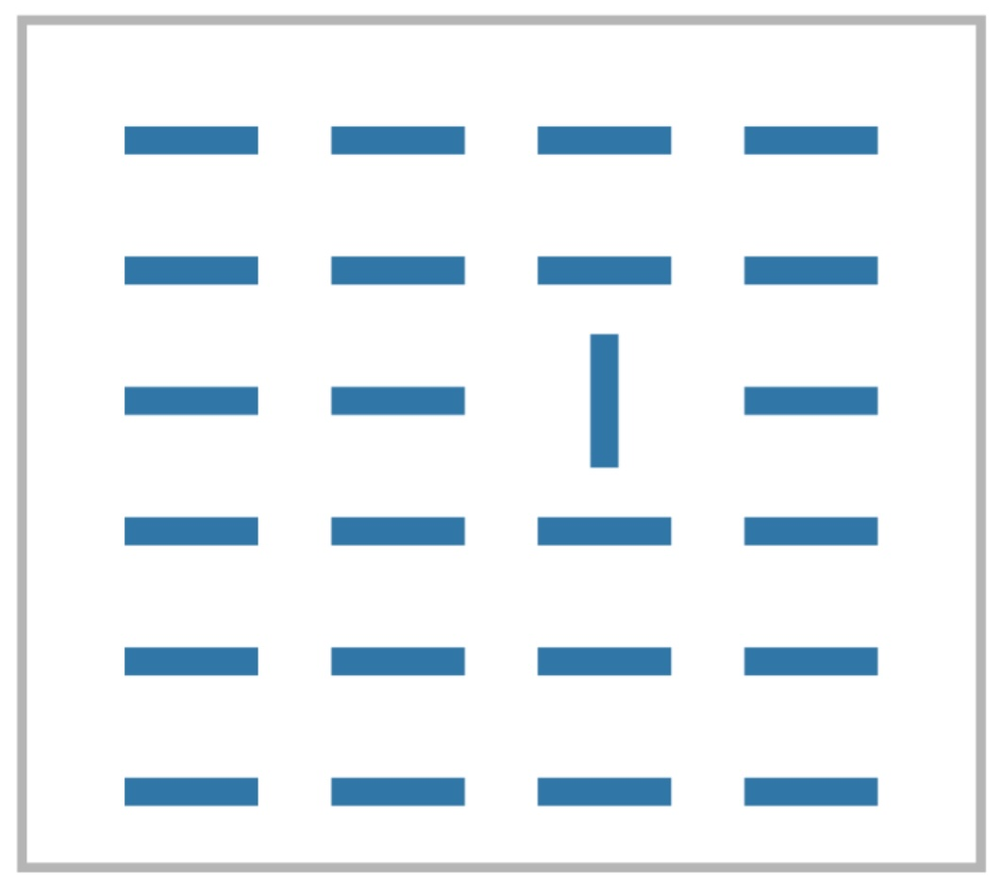
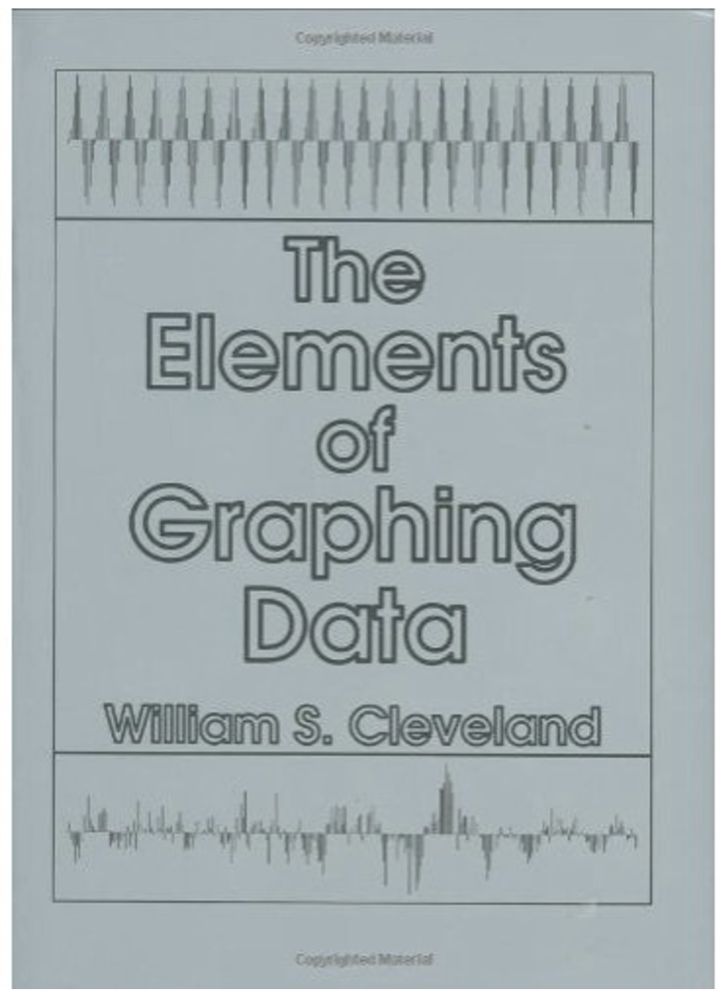

Perception for Design
DS-GA 3001 - Fall 2026
2026-09-15
Perception for Design

Brain
“Visual thinking consists of a series of acts of attention, driving eye movements, and tuning our pattern finding circuits”, Colin Ware

The Implications for Design
“Just-in-time visual queries” (Ware)
“One way to look at how the brain operates is as a set of nested loops. Outer loops deal with generality while inner loops process detail.” (Ware)

Low-Level Feature Analysis
- David Hubel and Torsten Wiesel won Nobel prize for this discovery.

What and Where Pathways
What: identification of objects in environment.
Where: location of objects and eye movement.

What Stands Out (Popout)
- Anne Treisman studied how to find patterns and shapes when surrounded by others.


For some configurations the time did not depend on the number of distracters (pre-attentive).
What Stands Out (Popout)

Closure
We can complete incomplete shapes
Implications: visualizations can be unintentionally misleading! Conversely: sometimes only necessary to show sparse set of marks to convey trend (dot plot)

Similarity
- Elements with the same visual properties considered to be grouped

Proximity
- Elements that are of close spatial proximity are somehow grouped.

Proximity
- Elements that are of close spatial proximity are somehow grouped.

Enclosure
- Explicit visual encoding of enclosure also depicts grouping.

Connection
- Objects connected together are perceived as a group.

Connection
- Objects connected together are perceived as a group.

Connection
- Objects connected together are perceived as a group.

Just Noticeable Difference (JND)
In psychophysics a just-noticeable difference or JND is the amount something must be changed in order for a difference to be noticeable, detectable at least half the time.
Stevens’s power law: link

Graphical Perception


Graphical Perception Results

Effectiveness Effect

Popout
Tasks requiring the use of multiple channels are (most of the time) not preattentive